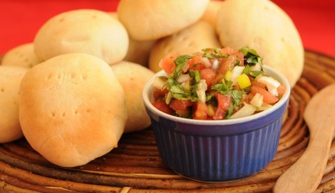

If you see me near this, prevent me from over eating, I have zero self control.
How can I describe this. Well, as you might guess is a sauce, or dressing as you anglos call it. When I was living in the US someone asked me. Isn't that just pico de gallo? I haven't spoke to them since. Pebre is a classic chilean sauce, it goes with everything. Empanada? Yes. Bread? Yes. Sopaipilla? Yes please. I could go on.
I wanted to share this recipe since it's from my country and my personal #1 favorite sauce. I wish I had the time to prepare it more often. It's just a bit sad that something that takes a while to make, can be gone in mere minutes.
Source: Gourmet Chile